SOUND·LIGHT·EVENTS
+34 603 62 14 19Аренда звука
Заказать


BRONZE
SILVER

GOLD

PLATINUM
DIAMOND

BIG BOSS
* В этой категории вы можете ознакомиться с предложением по аренде комплектов оборудования. Комплекты составлены исходя из бюджета и размера мероприятия, но НЕ ограничиваются в позициях. Наши менеджеры помогут Вам в подборе оборудования исходя из Ваших пожеланий и предпочтений.

Мы обеспечиваем высокое качество звука и исправность всего звукового оборудования. Мы делаем все необходимое для того, чтобы наши клиенты получили оборудование, соответствующее их запросам и требованиям по масштабу их мероприятия.
Если вам необходимо в кратчайшие сроки организовать предстоящее торжество или презентацию, аренда звукового оборудования у нас – лучший вариант. Благодаря разумным ценам, большому опыту и профессиональной аппаратуре мы способны удовлетворить даже самых требовательных клиентов.
Вы можете арендовать самые популярные звуковые наборы для свадьбы, банкета, юбилея, дня рождения, DJ выступления, конференции, презентации, модельного показа или корпоратива и позволяют выполнить поставленную задачу на все 100%. Мы подберем оптимальную систему для вас, учитывая ваши пожелания, размеры помещения, расположение. Будем рады предоставить вам лучший качественный сервис!
Подробнее...Качественная музыка-неотъемлемая часть любого праздника. Даже для небольших мероприятий и презентаций необходимо профессиональное звуковое оборудование. Это связано с тем, что никому не понравится звук неисправного оборудования или грохот, который может испортить общее впечатление даже от самого грандиозного мероприятия. Быстро и качественно подготовьтесь к предстоящему событию. Мы предоставляем в аренду новейшее звуковое HIGH-END оборудование в Марбелье и на всем побережье Коста-дель-Соль, гарантируя, что ваше мероприятие пройдет громко, с четкими мелодиями и голосами. Мы специализируемся на техническом обеспечении мероприятий, и аренда звука-одна из наших специализаций. Когда наши специалисты прибывают на место, они привозят все необходимое оборудование и быстро устанавливают его и готовят к работе. С нашей помощью вы сможете создать яркую, энергичную и праздничную атмосферу для вашей вечеринки, которая запомнится всем участникам!


 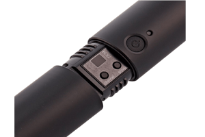
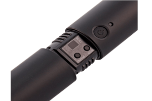
Беспроводная вокальная микрофонная система BLX24E/B58 с переносным футляром. ВОКАЛЬНЫЙ МИКРОФОН BETA 58A Частота адаптирована к вокалу, с яркими средними и басовыми тонами для контроля приближения Равномерная суперкардиоидная диаграмма направленности для высокого усиления без обратной связи и превосходного подавления внеосевых звуков. Неодимовый магнит для высокого уровня сигнала/шума Решетка из закаленной стали, устойчивая к износу и неправильному обращению Усовершенствованная система крепления с пневматическим амортизатором, сводящая к минимуму передачу механического шума и вибрации Минимально подвержен влиянию переменного импеданса нагрузки Легендарное качество и надежность Shure ПЕРЕДАТЧИК BLX2 Светодиод для состояния питания и состояния батареи Регулируемая регулировка усиления Быстрый и простой поиск частоты Батарейки типа АА (входят в комплект) обеспечивают до 14 часов непрерывной работы. Рабочий диапазон 100 м (300 футов) (видимость) приемник BLX4 До 12 совместимых систем (в зависимости от региона) Различные внутренние антенны с микропроцессорным управлением QuickScan в одно касание определяет наилучшую частоту открытия Аудиовыходы ¼" и XLR Двухцветный светодиодный индикатор состояния звука Чемодан, артикул: 95D16526 Поворотный адаптер, номер детали: 90F4046 Источник питания PS23E Резьбовой адаптер: 31B1856
Заказать
 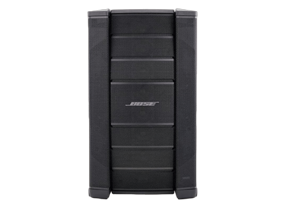
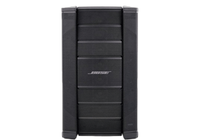


Громкоговоритель Bose F1 Model 812 — это первый портативный громкоговоритель с автономным питанием, который позволяет управлять диаграммой направленности по вертикали. Независимо от того, в какой комнате вы находитесь, у вас будет адекватное покрытие. Основная акустическая система для групп, ди-джеев и мероприятий. Полный диапазон 1000 Вт. Гибкое управление по вертикали с охватом 100º по горизонтали. Его гибкий набор позволяет выбирать между 4 шаблонами покрытия. Один 12-дюймовый низкочастотный динамик и восемь 2,25-дюймовых драйверов. Технология FLEX Array. Гибкая конструкция перегородки, которую можно настроить четырьмя уникальными способами, чтобы выбрать наилучшую схему покрытия для приложения. Линейный массив средних/высоких частот с 8 вертикально ориентированными драйверами. Каждый драйвер установлен на специальном 100-градусном волноводе, который обеспечивает широкое и стабильное покрытие. Высокопроизводительный 12-дюймовый НЧ-драйвер обеспечивает мощное воспроизведение низких частот. Конструкция с двойным усилением и двумя высокопроизводительными усилителями класса D для отдельного питания 12-дюймового драйвера массива LF FLEX. 2 входных канала с независимыми регуляторами громкости и переключателем линейного уровня/микрофона на канале 1. Крепление на столб 35 мм. Размеры 665 х 334 х 372 мм. Вес 20,2 кг. 2Х BOSE F1 САБВУФЕР Сабвуфер Bose F1 предлагает все функции более крупного басового корпуса, но в компактном корпусе, поэтому его легко транспортировать. Сабвуфер F1 мощностью 1000 Вт использует два 10-дюймовых драйвера с высоким ходом для обеспечения высококачественного звука и глубоких, пробивных басов. Этот сабвуфер включает в себя встроенный монтажный кронштейн, предназначенный для установки громкоговорителя F1 812 с гибкой матрицей, что делает установку быстрой и легкой, а кабельные каналы обеспечивают чистоту и профессионализм установки. Инновационный переключатель полярности позволяет регулировать полярность сабвуфера, выбирая между NORM и REV, а инверсия полярности позволяет легко исправить перекрытие низких частот. Это идеальная система для любой группы, сольных музыкантов, ди-джеев, заведений гостеприимства и многого другого. Характеристики: Тип системы: автономная Мощность системы: 1000 Вт Драйверы: 2 x 10-дюймовые высокоходовые драйверы Частотная характеристика: 48 Гц - 100 Гц Диапазон частот: 38 Гц - 115 Гц (-10 дБ) Номинальная дисперсия: всенаправленная Максимальный уровень звукового давления на расстоянии 1 м: 132 дБ SPL (пик) Частота кроссовера: шаг Баттерворта 40-100 Гц 100 Гц фильтр Баттерворта 4-го порядка на линейном выходе Искажение при номинальной мощности: макс. 0,1% (30 Гц - 154 кГц) Системный ограничитель: динамический ограничитель Индикатор питания: Синий светодиод: система включена Сигнальные индикаторы: Питание/Неисправность Ограничение передний светодиод сигнальный вход Входные соединения: 2 x XLR — 1/4 ''Combo Элементы управления: уровень громкости Выбор функции переднего светодиода Включить и выключить Выбор полярности Линейный эквалайзер Линейный выход: сбалансированный XLR Переменный ток: разъем IEC Тип корпуса: Деревянный корпус с ударопрочной композитной столешницей. Решетка: перфорированная стальная решетка с покрытием Размеры: 688 х 410,16 х 448,5 мм (В х Ш х Г) Вес нетто: 24,9 кг Заказать


 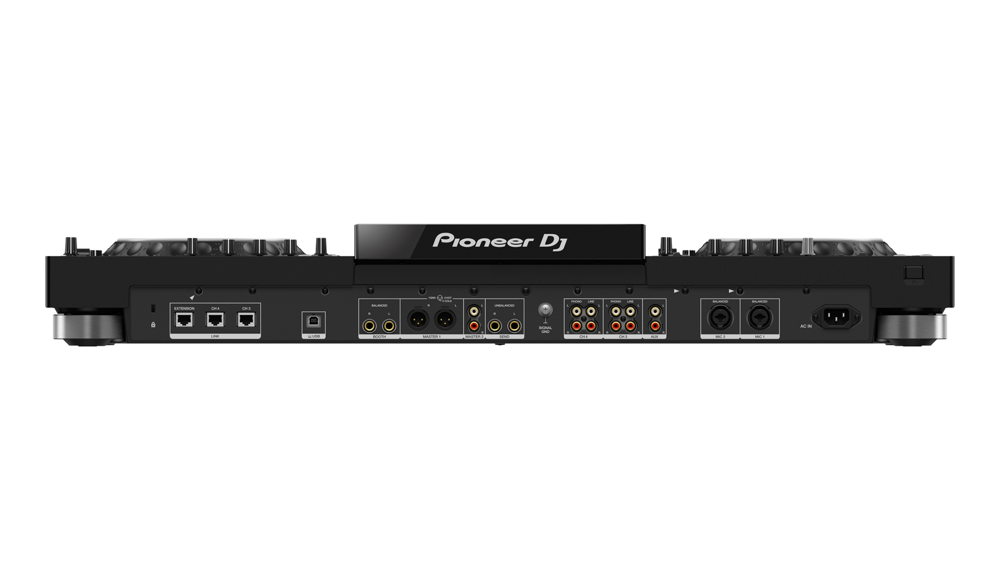
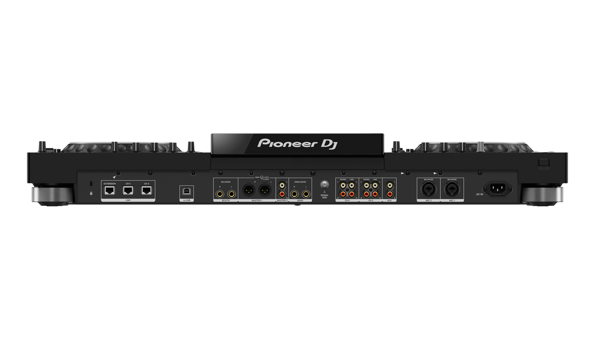

Pioneer XDJ-XZ это DJ-система «все в одном» для rekordbox и Serato DJ Pro. Универсальный юнит оснащён широким спектром функций, прочным и надежным шасси, а также ощущением от использования супер популярных линеек профессиональных проигрывателей и микшеров производителя CDJ и DJM. Поддержка медиа Вы можете выбрать, хотите ли вы использовать устройства USB, подключить свой ноутбук и управлять rekordbox DJ, или использовать режим Link Export для непосредственного воспроизведения треков из библиотеки rekordbox. В ином случае есть бонус подключения внешних источников, таких как проигрыватели, сэмплеры, CDJ или смартфоны, к 3-му и 4-му каналу, а Pro DJ link позволяет просматривать и выбирать треки из CDJ. Работа с дисплеями Модель может похвастаться 7-дюймовым сенсорным ЖК-дисплеем, показывающим оперативную информацию. Есть два полноразмерных джога, в центре каждого из которых находится On Jog Display. Цветной экран отображает важную информацию, такую как формы волны, BPM, метки быстрого доступа и многое другое. Вся эта доступная визуальная информация означает, что вы можете сосредоточиться на выступлении, а не смотреть на ноутбук. Полноразмерные джоги идеально подходят для смешивания и дают ощущение скрэтча. Коммутация и управление Устройство заполнено различными элементами управления, со знакомой компоновкой NXS2. Вы можете микшировать с 4 каналами и использовать 14 Beat FX и 6 Sound Color FX, чтобы добавить живости и эммоций своим выступлениям. Также есть 16 разноцветных пэдов (по восемь на каждой деке), три входа USB (два на верхней панели и одно на задней для подключение ноутбука) идеально подходящих для плавных переходов, 2 линейных входа RCA, 2 входа Phono RCA, 1 вход AUX RCA и 2 микрофонных XLR и 1/4-дюймовых разъема TRS. Кроме того, имеется 2 выхода Master XLR и RCA, 1 1/4-дюймовых выход TRS, 2 1/4-дюймовых стереофонических разъема для наушников, 3,5-мм стереофонический мини-разъем для наушников и 1 1/4 Send-выход TS. Звучание Юнит производит фантастическое, ясное и высококачественное аудио благодаря расширенным функциям системы и возможности адаптации к среде, в которой вы играете. Вы можете точно настроить свой микс, используя 3-полосный эквалайзер на Master выходе. Вы также найдете 3-полосный эквалайзер на каждом из микрофонных входов для исключительного контроля. Кроме того, есть функция подавления обратной связи, если она возникнет из-за микрофонов. All-in-one юнит Pioneer XDJ-XZ - это первая в своем роде DJ-система "все в одном". Это функция, которая позволяет безупречно синхронизировать внешнее оборудование, а затем синхронизировать звук с микшированием. Вы также можете просматривать дорожки на устройстве USB с любого из подключенных устройств. Софт и управление В комплект входит rekordbox и он полностью готов к работе с Serato DJ Pro после ожидаемого обновления прошивки в начале 2020 года. Надежная, прочная и высококачественная DJ-система, несомненно, хорошо оснащена. Она идеальна для различных мест и локаций, клубов или мероприятий, или даже для сердца домашней студии. Plug and play Благодаря функции plug and play девайс готов к работе. Просто убедитесь, что вы обновили до последней версии rekordbox DJ, и активируйте лицензионный ключ, поставляемый с системой. Также стоит упомянуть, что он поддерживает rekordbox DVS, лицензию на который можно приобрести отдельно. То же самое относится к Serato DVS после упомянутого обновления. Характеристики: Частотный диапазон: 20 - 20000 Гц
Заказать


Devialet Phantom I 108 dB - это высококачественная акустическая система с поддержкой Bluetooth, Spotify и Airplay2. Devialet Phantom I 108dB разработан с использованием передовых технологий для иммерсивного и музыкального звучания. Призрачный диапазон В линейку Devialet Phantom I входят две модели: 103 дБ и 108 дБ. Они отличаются мощностью и уровнем звукового давления. Они идеально подходят для основных левого и правого динамиков или если вам нужно больше, чтобы заполнить большие комнаты. Двойное увеличение для стерео Devialet Phantom I 108dB может быть соединен с другим или несколькими, для еще большего звукового расширения и мультирумной системы. С добавлением в микс еще одного динамика, ваш звук приобретает новое измерение. Приложение Devialet Приложение Devialet, доступное для Android и Apple iOS, может синхронизировать всю вашу систему Devialet вместе, чтобы слушать как одно целое, а также иметь возможность независимо воспроизводить звук в каждой комнате. Приложение Devialet также позволяет настраивать динамики, редактировать настройки, быть в курсе последних событий и регулировать задержку среди других элементов управления. Возможности потоковой передачи Phantom I 108dB от Devialet имеет встроенный Bluetooth, чтобы вы могли соединить свой телефон, планшет или ноутбук, чтобы вы могли передавать аудио по беспроводной сети. Он поддерживает потоковые приложения, чтобы сделать этот процесс плавным, например Apple AirPlay 2, Spotify Connect и Roon Ready. Devialet Technology Phantom I 108dB от Devialet включает в себя многие передовые запатентованные технологии Devialet, обеспечивающие точный и мощный звук. Заказать
 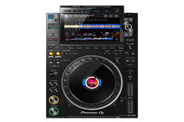
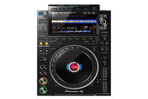


Pioneer CDJ-3000 - профессиональный DJ-проигрыватель с сенсорным экраном 9" и возможностью работы с iPhone, новый флагман линейки CDJ. CDJ-3000 оснащен блоком MPU с мощными возможностями обработки. Обработка внутреннего аудио в CDJ-3000 повышена до 96 кГц / 32 бит и может использоваться со всеми аудиоформатами. Обновленная технология также включает новую функцию Key Shift, воспроизведение с переменной скоростью и управление общим темпом. Большой 9-дюймовый сенсорный экран облегчает просмотр вашей библиотеки и управление. Кнопки Playlist и Search расположены над экраном для быстрого доступа к спискам воспроизведения и удобного просмотра вашей библиотеки. Теперь под экраном находятся 8 кнопок меток быстрого доступа. Также стоит отметить, что новый CDJ-3000 не имеет привода для компакт-дисков. Вы можете подключить свой ноутбук и напрямую воспроизводить свою библиотеку rekordbox, воспроизводить музыку с USB или SD-карты или - если вы используете самую последнюю версию rekordbox - даже подключить свой iPhone к CDJ-3000 через USB кабель и микшировать треки прямо с телефона. Pioneer DJM-V10 - 6-канальный профессиональный DJ микшер нового типа с уникальными характеристиками. Микшер предлагает беспрецедентное качество 96-кГц/64-бит, цифровую обработку в DSP, а также высококачественные 32-битные аналого-цифровые и цифро-аналоговые преобразователи и синхронизатор с низким джиттером. 6 каналов с разными типами входов помогут создать идеальный сетап и подключить любое оборудование, от CDJ и вертушек до сэмплеров, синтезаторов и драм-машин. Микшер оснащен новым 4-полосным эквалайзером. Встроенный компрессор позволяет настроить громкость ваших треков. Расширенная секция Send-Return позволяет добавлять внешние эффекты FX или комбинировать их со встроенными FX. 3-полосный мастер изолятор с новой функцией усиления/обрезки кривых и настройкой частот кроссовера и других параметров,позволяет с легкостью управлять тональностью всего микса. Два выхода для наушников и эквалайзера позволят двум диджеям удобно осуществлять мониторинг. Фиксация шнура питания обеспечивает надежность подключения, предупреждает его случайное отключение от сети. Запишите и заархивируйте свои миксы через iPhone или iPad, загрузите из в облачный сервис или с легкостью осуществляйте прямую трансляцию своих сессий.
Заказать
 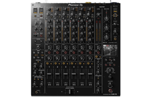
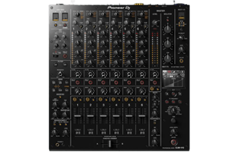
 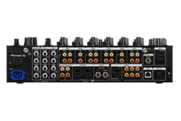
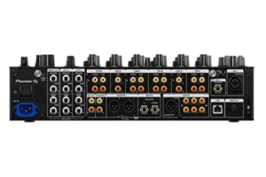
Pioneer DJM-V10 - 6-канальный профессиональный DJ микшер нового типа с уникальными характеристиками. Микшер предлагает беспрецедентное качество 96-кГц/64-бит, цифровую обработку в DSP, а также высококачественные 32-битные аналого-цифровые и цифро-аналоговые преобразователи и синхронизатор с низким джиттером. 6 каналов с разными типами входов помогут создать идеальный сетап и подключить любое оборудование, от CDJ и вертушек до сэмплеров, синтезаторов и драм-машин. Микшер оснащен новым 4-полосным эквалайзером. Встроенный компрессор позволяет настроить громкость ваших треков. Расширенная секция Send-Return позволяет добавлять внешние эффекты FX или комбинировать их со встроенными FX. 3-полосный мастер изолятор с новой функцией усиления/обрезки кривых и настройкой частот кроссовера и других параметров,позволяет с легкостью управлять тональностью всего микса. Два выхода для наушников и эквалайзера позволят двум диджеям удобно осуществлять мониторинг. Фиксация шнура питания обеспечивает надежность подключения, предупреждает его случайное отключение от сети. Запишите и заархивируйте свои миксы через iPhone или iPad, загрузите из в облачный сервис или с легкостью осуществляйте прямую трансляцию своих сессий. Также доступна функция DVS с низкой задержкой, позволяющая управлять и скретчить с CDJ или вертушек с помощью rekordbox, Serato DVS (лицензия на Serato DJ Club Kit продается отдельно, скоро будет совместима с Serato DJ Pro) или TRAKTOR PRO 3 (продается отдельно). Кроме того, DJM-V10 поддерживает расширенный протокол PRO DJ LINK ShowKontrol, который позволяет использовать всю основную информацию из DJM-V10, настраивать звук и видео для создания шоу. Характеристики: Тип: DJ микшер Количество каналов: 6 Частотные характеристики: 20 - 40 000 Гц Частота дискретизации: 96 кГц АЦП/ЦАП: 32 бит Соотношение сигнал/шум: 105 дБ Кроссфейдер: Magvel фейдер Входы: 4 PHONO (RCA), Send/Return, LAN х 1, USB х 2 USB В порта, 1 USB A порт Выходы: 2 MASTER (XLR, RCA), 1 BOOTH (1/4 дюймовый TRS джек), 4 HEADPHONE MONITOR (каждая секция: 1/4 дюймовый разъем, 1/8"), 1 REC (RCA), 1 цифровой (AES/EBU), 1 MIDI (DIN) MIDI управление: полностью назначенные элементы управления MIDI Совместимость с DVS: rekordbox, Serato DJ Pro, TRAKTOR PRO 3 Размеры: 437,6 х 107,9 х 467 мм Вес: 11,9 кг
Заказать


 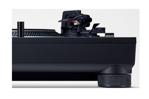
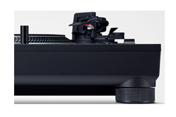
Проигрыватель Technics SL-1210 MK7 является новой доработкой модели, ставшей очень популярной у меломанов и ди-джеев. В модели Technics SL-1210 MK7, разумеется, был сохранен основной принцип конструкции – прямой привод от двигателя с большим пусковым моментом. Прямой привод обеспечивает стабильное и точное поддержание скорости вращения пластинки, а также возможность ее плавной регулировки и ручного подтормаживания (последние два обстоятельства и делают проигрыватель таким желанным для профессионалов). В модели Technics SL-1210 MK7 двигатель был доработан, что еще больше улучшило его параметры и повысило надежность и стабильность работы. Technics SL-1210 MK7 оснащен статически сбалансированным S-образным тонармом, также являющимся классическим для проигрывателей компании. Благодаря высокой точности изготовления и продуманной конструкции тонарм обеспечивает превосходный трекинг и качественное звучание даже на пластинках с неидеальной поверхностью. Technics SL-1210 MK7 оснащен массивным нерезонирующем шасси из литого алюминия и ABS-плиты в нижней части, которое установлено на комбинированных демпфированных опорах – они имеют резиновую оболочку и внутреннюю пружину. При этом опоры имеют регулировку по высоте, что позволяет выставить Technics SL-1210 MK7 точно по горизонтали даже на неровных поверхностях. Опорный диск в проигрывателе также алюминиевый и покрыт сверху резиной, которая демпфирует его, а также служит в качестве коврика для пластинки. Цвет подсветки стробоскопа и органов управления в проигрывателе можно менять с помощь микропереключателя. В модели Technics SL-1210 MK7 установлена цифровая схема питч-контроля (плавного изменения скорости вращения диска), работающая в диапазоне ± 8 или 16%, что повышает точность регулировки. Technics SL-1210 MK7 оснащен электронным переключателем скорости 33, 45 или 78 об/мин. Также здесь имеется и удобная подсветка Target Light, которая была впервые применена в модели SL-1210 MK2. Использование для освещения яркого светодиода с белым свечением делает проигрыватель удобным в использовании даже в темных помещениях.
Заказать 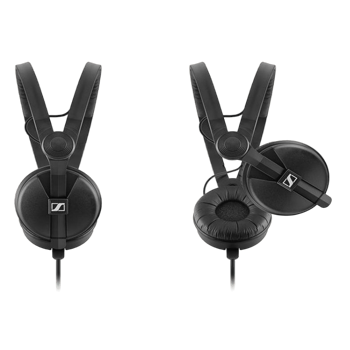
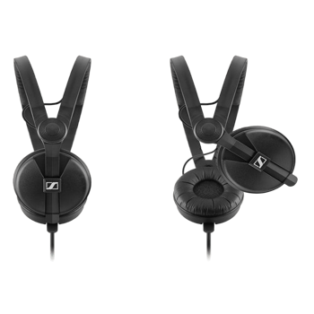
Благодаря небольшому весу и возможности прослушивания одним ухом, HD 25 Plus являются незаменимыми мониторными наушниками. Закрытые HD 25 Plus - это специально разработанные профессиональные наушники для мониторинга, обеспечивающие высокую степень ослабления окружающего шума. Эти наушники способны работать при высоком уровне звукового давления и имеют чрезвычайно прочную конструкцию. Они исключительно хороши для работы в условиях повышенного шума, например при сборе новостей, в звукоусилении, в студийном мониторинге и тестировании аудио оборудования. Идеально подходят для кинооператоров и ди-джеев - это настоящие профессиональные наушники. Характеристики Тип устройства проводные наушники Конструкция накладные Технология динамические Минимальная воспроизводимая частота 16 Гц Максимальная воспроизводимая частота 22000 Гц Импеданс 70 Ом Чувствительность 120 дБ Параметры чувствительности дБ/В Максимальная мощность 200 мВт Коэффициент гармоник 0.3 %
Заказать


Прочный кронштейн с двойной рамой X-типа обеспечивает дополнительную устойчивость для тяжелых и легких цифровых электронных клавишных инструментов. Быстросъемный механизм этой подставки позволяет пользователю регулировать высоту от 10 до 98 см; по сравнению с большинством других креплений, которые допускают только пять установленных положений. Сборка не требуется; металлические части этой подставки для клавиатуры сварены вместе, и нет никаких винтов, которые можно потерять. Прочные поддерживающие ремни, прикрепленные к подставке для клавиатуры, защищают клавиатуру от смещения во время исполнения. Нескользящие резиновые ножки придают этой подставке дополнительную устойчивость.
Заказать


Pioneer CDJ-3000 - профессиональный DJ-проигрыватель с сенсорным экраном 9" и возможностью работы с iPhone, новый флагман линейки CDJ. CDJ-3000 оснащен блоком MPU с мощными возможностями обработки. Обработка внутреннего аудио в CDJ-3000 повышена до 96 кГц / 32 бит и может использоваться со всеми аудиоформатами. Обновленная технология также включает новую функцию Key Shift, воспроизведение с переменной скоростью и управление общим темпом. Большой 9-дюймовый сенсорный экран облегчает просмотр вашей библиотеки и управление. Кнопки Playlist и Search расположены над экраном для быстрого доступа к спискам воспроизведения и удобного просмотра вашей библиотеки. Теперь под экраном находятся 8 кнопок меток быстрого доступа. Также стоит отметить, что новый CDJ-3000 не имеет привода для компакт-дисков. Вы можете подключить свой ноутбук и напрямую воспроизводить свою библиотеку rekordbox, воспроизводить музыку с USB или SD-карты или - если вы используете самую последнюю версию rekordbox - даже подключить свой iPhone к CDJ-3000 через USB кабель и микшировать треки прямо с телефона. Pioneer DJM-V10 - 6-канальный профессиональный DJ микшер нового типа с уникальными характеристиками. Микшер предлагает беспрецедентное качество 96-кГц/64-бит, цифровую обработку в DSP, а также высококачественные 32-битные аналого-цифровые и цифро-аналоговые преобразователи и синхронизатор с низким джиттером. 6 каналов с разными типами входов помогут создать идеальный сетап и подключить любое оборудование, от CDJ и вертушек до сэмплеров, синтезаторов и драм-машин. Микшер оснащен новым 4-полосным эквалайзером. Встроенный компрессор позволяет настроить громкость ваших треков. Расширенная секция Send-Return позволяет добавлять внешние эффекты FX или комбинировать их со встроенными FX. 3-полосный мастер изолятор с новой функцией усиления/обрезки кривых и настройкой частот кроссовера и других параметров,позволяет с легкостью управлять тональностью всего микса. Два выхода для наушников и эквалайзера позволят двум диджеям удобно осуществлять мониторинг. Фиксация шнура питания обеспечивает надежность подключения, предупреждает его случайное отключение от сети. Запишите и заархивируйте свои миксы через iPhone или iPad, загрузите из в облачный сервис или с легкостью осуществляйте прямую трансляцию своих сессий. Pioneer DJM-V10 - 6-канальный профессиональный DJ микшер нового типа с уникальными характеристиками. Микшер предлагает беспрецедентное качество 96-кГц/64-бит, цифровую обработку в DSP, а также высококачественные 32-битные аналого-цифровые и цифро-аналоговые преобразователи и синхронизатор с низким джиттером. 6 каналов с разными типами входов помогут создать идеальный сетап и подключить любое оборудование, от CDJ и вертушек до сэмплеров, синтезаторов и драм-машин. Микшер оснащен новым 4-полосным эквалайзером. Встроенный компрессор позволяет настроить громкость ваших треков. Расширенная секция Send-Return позволяет добавлять внешние эффекты FX или комбинировать их со встроенными FX. 3-полосный мастер изолятор с новой функцией усиления/обрезки кривых и настройкой частот кроссовера и других параметров,позволяет с легкостью управлять тональностью всего микса. Два выхода для наушников и эквалайзера позволят двум диджеям удобно осуществлять мониторинг. Фиксация шнура питания обеспечивает надежность подключения, предупреждает его случайное отключение от сети. Запишите и заархивируйте свои миксы через iPhone или iPad, загрузите из в облачный сервис или с легкостью осуществляйте прямую трансляцию своих сессий. Также доступна функция DVS с низкой задержкой, позволяющая управлять и скретчить с CDJ или вертушек с помощью rekordbox, Serato DVS (лицензия на Serato DJ Club Kit продается отдельно, скоро будет совместима с Serato DJ Pro) или TRAKTOR PRO 3 (продается отдельно). Кроме того, DJM-V10 поддерживает расширенный протокол PRO DJ LINK ShowKontrol, который позволяет использовать всю основную информацию из DJM-V10, настраивать звук и видео для создания шоу. Характеристики: Тип: DJ микшер Количество каналов: 6 Частотные характеристики: 20 - 40 000 Гц Частота дискретизации: 96 кГц АЦП/ЦАП: 32 бит Соотношение сигнал/шум: 105 дБ Кроссфейдер: Magvel фейдер Входы: 4 PHONO (RCA), Send/Return, LAN х 1, USB х 2 USB В порта, 1 USB A порт Выходы: 2 MASTER (XLR, RCA), 1 BOOTH (1/4 дюймовый TRS джек), 4 HEADPHONE MONITOR (каждая секция: 1/4 дюймовый разъем, 1/8"), 1 REC (RCA), 1 цифровой (AES/EBU), 1 MIDI (DIN) MIDI управление: полностью назначенные элементы управления MIDI Совместимость с DVS: rekordbox, Serato DJ Pro, TRAKTOR PRO 3 Размеры: 437,6 х 107,9 х 467 мм Вес: 11,9 кг
Заказать